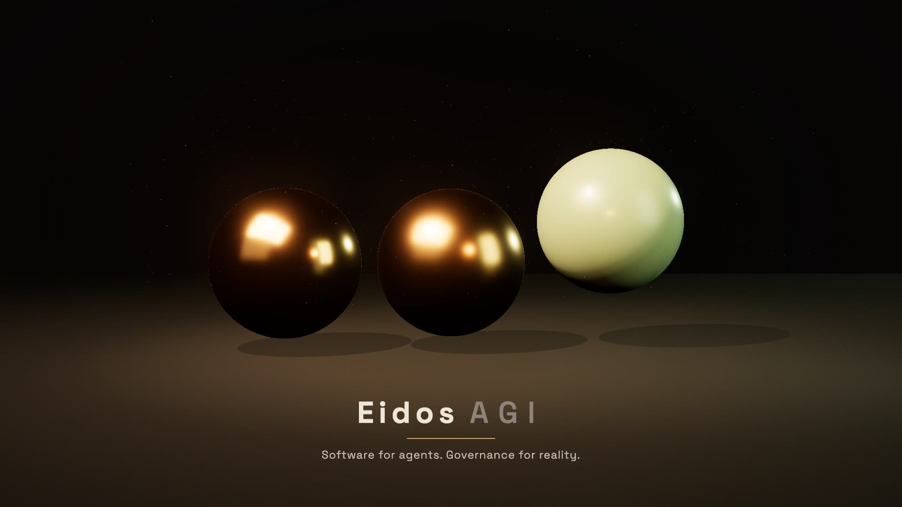
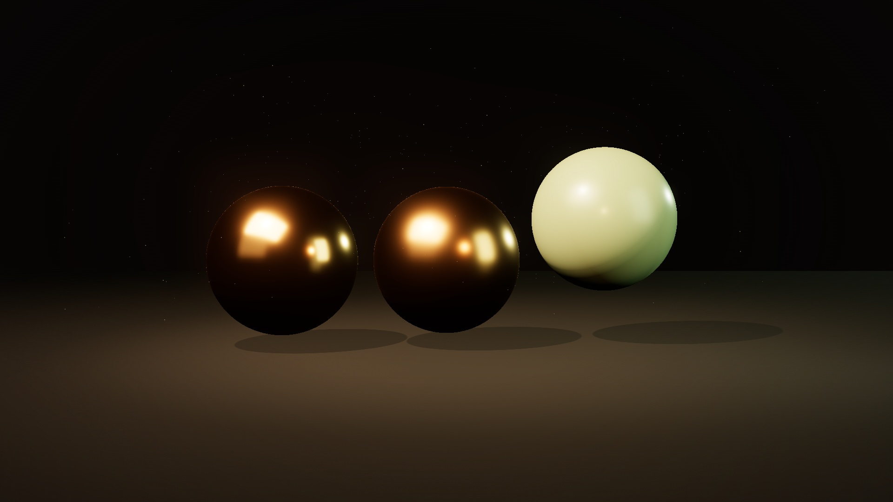
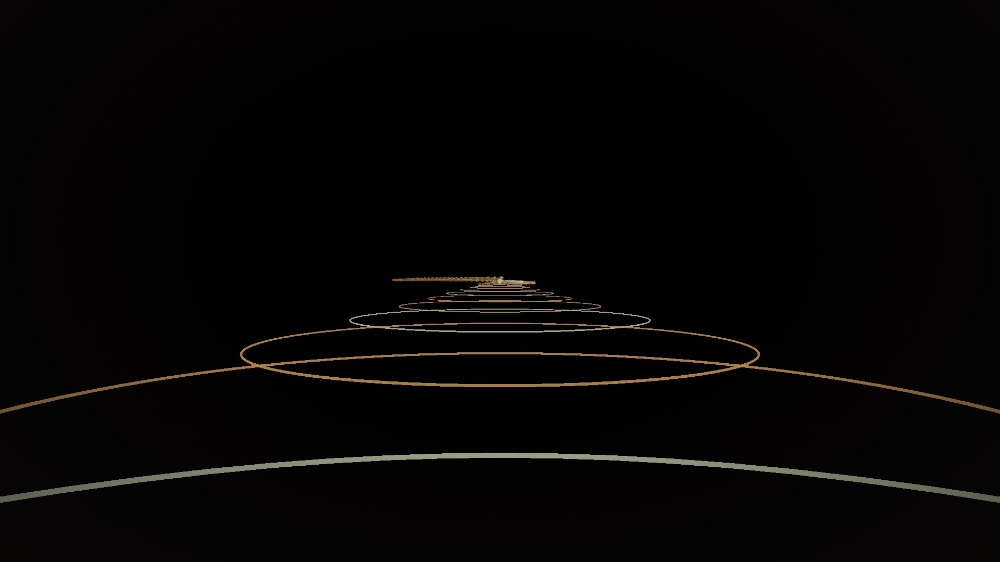
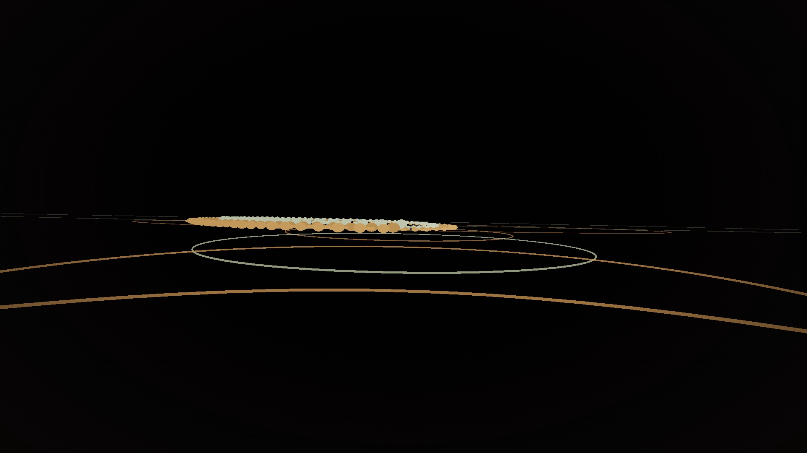
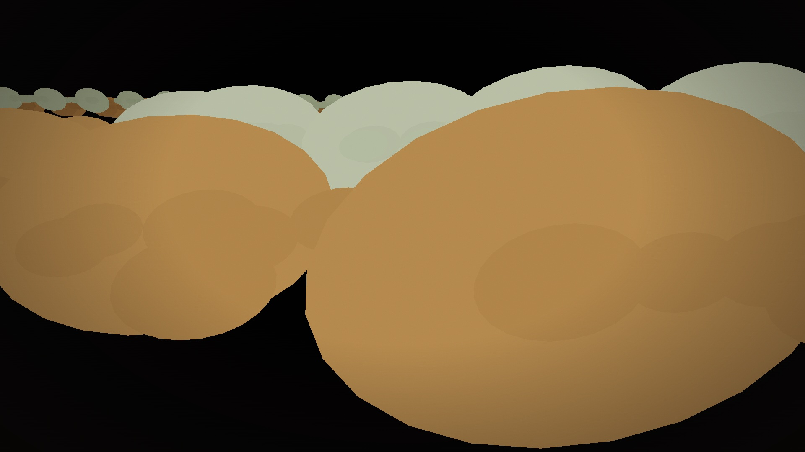
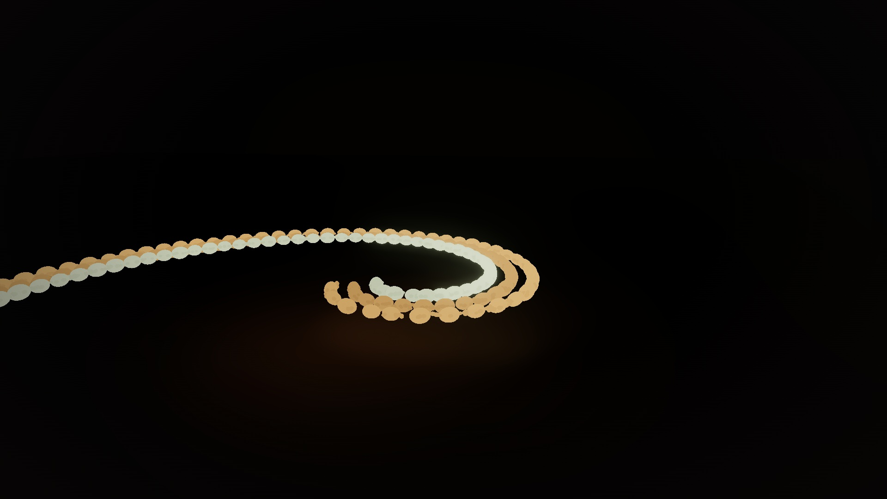
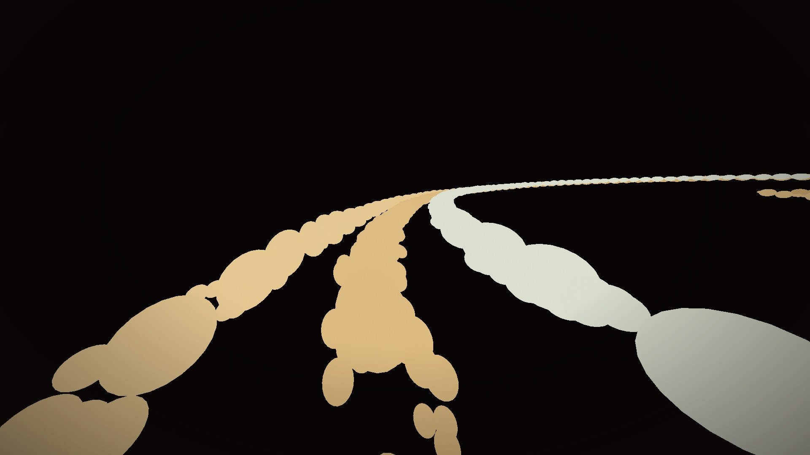

Scene 6 · 1:28–1:44
The mark.
Two even, one raised. Face camera. Hold through the decay. No type.

Eidos Video
Same scene. Recapture. No inference.
Same scene.json
The camera did not move. No new prompt. Recapture, not another generate.


Scene 1 · 0:00–0:16
Black. One unmoving lodestar. Camera falls through stacked shells. The star does not drift.

Scene 2 · 0:16–0:34
The lodestar becomes the vanishing point of a three-lane night road. Camera already in the cockpit.

Scene 3 · 0:34–0:52
The road peels. Nested rooms stack in Z. The loop looking at its own machinery.

Scene 4 · 0:52–1:10
The stack flattens. Something older moves under the road. The camera cannot command it.

Scene 5 · 1:10–1:28
Ribbon gathers onto a contracting shell. What was kept pulls in. Figure-skater into the hit.

Scene 6 · 1:28–1:44
Two even, one raised. Face camera. Hold through the decay. No type.
The process
AI-generated video spends inference on pixels you cannot steer. Eidos Video stores the scene. Change the camera. Only the render recalculates.
Camera, objects, duration. Steer here. Recapture when the renderer improves.
Scene order, cited. The ident is a list, not a baked clip.
Six mute beats. The story stays a book you can retell.
This player as a product graph.
The board that planned the site.